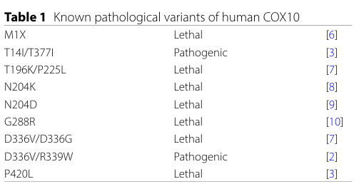

COX10 is a multipass mitochondrial inner-membrane enzyme that converts protoheme IX (heme b) and farnesyl diphosphate to heme O. This farnesylation is the first step of heme A biosynthesis; COX15 subsequently converts heme O to heme A. Heme A supplies the prosthetic groups of cytochrome c oxidase, so COX10 deficiency impairs the accumulation and assembly of respiratory complex IV. Biallelic pathogenic variants cause mitochondrial complex IV deficiency with variable neurological and systemic manifestations. Alternative splicing produces a shorter protein with an altered N terminus.
| GO Term | Evidence | Action | Reason |
|---|---|---|---|
|
GO:0005739
mitochondrion
|
IBA
GO_REF:0000033 |
ACCEPT |
Summary: Phylogenetically supported mitochondrial localization.
Reason: The current PTHR43448 tree places human Q12887 below PTN000114245; its ungapped MSA sequence exactly matches the 443-residue reference protein. The current mouse donor has experimental mitochondrial evidence, and the target has independent HPA and proteome support. Target self-with/from is legitimate descendant evidence. Current topology supports placement but does not reconstruct every historical narrow-term IBD decision.
|
|
GO:0006784
heme A biosynthetic process
|
IBA
GO_REF:0000033 |
ACCEPT |
Summary: COX10 performs a step of heme A biosynthesis.
Reason: Human COX10 lies below the recorded PTN000114245 node in the current family tree. Current donor records for mouse, fission yeast and budding yeast and the human target retain heme A pathway support. Human patient-cell HPLC and complementation independently establish the pathway contribution. COX10 makes heme O, which is converted to heme A by COX15; it need not perform every pathway step. The target self-source is not circular.
|
|
GO:0008495
protoheme IX farnesyltransferase activity
|
IBA
GO_REF:0000033 |
ACCEPT |
Summary: The conserved specific reaction is protoheme IX farnesylation.
Reason: The current human sequence descends from PTN000114243, with mouse and E. coli source members in the authenticated family. Current E. coli CyoE IDA evidence explicitly measures heme O formation from protoheme and farnesyl diphosphate. Human yeast complementation and patient-cell heme rescue corroborate the orthologous function. Bacterial enzymology and phylogenetic inference are not presented as a purified human-enzyme assay.
|
|
GO:0004659
prenyltransferase activity
|
IEA
GO_REF:0000117 |
MODIFY |
Summary: Replace broad prenyltransferase activity with the specific heme reaction.
Reason: Current ARBA00027066 branches 1 and 20 match the official InterPro/FunFam features and human taxonomic lineage. The broad reaction is sound, but GO:0008495 specifies the experimentally grounded heme substrate and heme O product. The replacement term is already annotated on COX10; this corrects the source-specific row and adds no NEW assertion.
Proposed replacements:
protoheme IX farnesyltransferase activity
|
|
GO:0006783
heme biosynthetic process
|
IEA
GO_REF:0000002 |
MODIFY |
Summary: Specify heme A biosynthesis within the broader heme pathway.
Reason: The actual InterPro IPR006369 and IPR016315 descriptions identify the COX10/heme O synthase family. COX10 performs the farnesylation step leading to heme A, so the existing more-specific process GO:0006784 captures its contribution without assigning upstream porphyrin-ring synthesis. The replacement term is already annotated on COX10; this corrects the source-specific row and adds no NEW assertion.
Proposed replacements:
heme A biosynthetic process
|
|
GO:0006784
heme A biosynthetic process
|
IEA
GO_REF:0000117 |
ACCEPT |
Summary: The current ARBA rule supports the specific heme A pathway.
Reason: ARBA00087087 branch 0 matches the exact target FunFam and eukaryotic lineage. Its heme A process inference agrees with human heme measurements and complementation; COX10 contributes enzymatic work through heme O production.
|
|
GO:0008495
protoheme IX farnesyltransferase activity
|
IEA
GO_REF:0000120 |
ACCEPT |
Summary: Independent electronic sources converge on protoheme IX farnesyltransferase activity.
Reason: The current combined source object retains the mouse UniProt/Ensembl transfer, COX10 InterPro signatures, RHEA:28070 and EC:2.5.1.141. The mouse accession and Ensembl product cross-reference were authenticated, and complete current same-term records are preserved. These support the same reaction as the human complementation and bacterial direct assay, without converting electronic evidence into human IDA.
|
|
GO:0016020
membrane
|
IEA
GO_REF:0000002 |
MODIFY |
Summary: Refine membrane localization to the mitochondrial inner membrane.
Reason: UbiA-family and COX10-specific InterPro signatures establish an integral membrane protein. The human reaction-specific Reactome catalyst entity explicitly locates COX10 at the mitochondrial inner membrane; current sequence topology is consistent with that site. This refinement does not assert mitochondrial import or equal activity for the untested shorter product.
Proposed replacements:
mitochondrial inner membrane
Supporting Evidence:
GO_REF:0000002
Reactome:R-HSA-2995330
|
|
GO:0016765
transferase activity, transferring alkyl or aryl (other than methyl) groups
|
IEA
GO_REF:0000002 |
MODIFY |
Summary: Specify protoheme IX farnesyltransferase activity.
Reason: IPR000537 is a broad UbiA prenyltransferase family that also contains enzymes with other substrates. COX10-specific family and reaction evidence resolves the transferred alkyl-group activity to protoheme IX farnesylation; GO:0008495 is the supported specific descendant. The replacement term is already annotated on COX10; this corrects the source-specific row and adds no NEW assertion.
Proposed replacements:
protoheme IX farnesyltransferase activity
|
|
GO:0017004
cytochrome complex assembly
|
IEA
GO_REF:0000117 |
MODIFY |
Summary: Specify the complex IV assembly context.
Reason: Current ARBA00086146 branch 3 matches the exact target FunFam and chordate lineage. The relevant cytochrome complex is respiratory complex IV. Human COX10-deficient fibroblasts have altered complex IV subassembly patterns, supporting the existing broad assembly context. This does not establish a heme-insertase activity or make assembly a separate direct catalytic core function. The replacement term is already annotated on COX10; this corrects the source-specific row and adds no NEW assertion.
Proposed replacements:
respiratory chain complex IV assembly
|
|
GO:0031966
mitochondrial membrane
|
IEA
GO_REF:0000120 |
MODIFY |
Summary: Refine mitochondrial membrane to the inner membrane.
Reason: The combined current record identifies COX10-specific IPR016315 and the UniProt mitochondrial inner-membrane location source. The reaction-specific Reactome physical entity is also explicitly in the inner membrane. The broader mitochondrial-membrane term can therefore be specialized.
Proposed replacements:
mitochondrial inner membrane
Supporting Evidence:
GO_REF:0000120
Reactome:R-HSA-2995330
|
|
GO:0005739
mitochondrion
|
IEA
GO_REF:0000107 |
ACCEPT |
Summary: Mitochondrial localization is supported across orthologs and on the human target.
Reason: The current Ensembl/UniProt source resolves to mouse Q8CFY5, whose official record carries the stated Ensembl protein identifier. Full current donor records and their provenance are preserved. The broad organelle location agrees with the mouse mitochondrial experiments and independent human HPA evidence, without importing a matrix-specific interpretation.
|
|
GO:0005759
mitochondrial matrix
|
IEA
GO_REF:0000107 |
MARK AS OVER ANNOTATED |
Summary: The transferred matrix location exceeds the localization evidence in its experimental donor paper.
Reason: The current mouse donor match is IDA to PMID:16103131. Its actual Methods and Results measure respiratory proteins in mitochondrial fractions and muscle sections. The Discussion explicitly reports that Cox10-specific antibody attempts failed to produce a specific immunoblot signal; Cox1p was used as a functional proxy. These observations support mitochondrial physiology but do not locate Cox10 in the gel-like matrix lumen defined by GO:0005759. This is a source-specific specificity judgment, not a claim that a membrane enzyme cannot expose domains to the matrix.
Supporting Evidence:
GO_REF:0000107
PMID:16103131
failed to produce antisera that could detect a specific band in immunoblots
|
|
GO:0005739
mitochondrion
|
IDA
GO_REF:0000052 |
ACCEPT |
Summary: Human immunofluorescence curation supports mitochondria.
Reason: The current Human Protein Atlas record authenticates COX10/ENSG00000006695 and reports mitochondria as the main ICC/IF location with supported reliability. Additional nucleolar/cytosolic observations are retained in the evidence record. The present assessment reads the returned experimental summary rather than independently interpreting the images, and does not infer isoform-specific localization.
Supporting Evidence:
GO_REF:0000052
|
|
GO:0006783
heme biosynthetic process
|
TAS
Reactome:R-HSA-189451 |
MODIFY |
Summary: Refine the broad Reactome pathway annotation to heme A biosynthesis.
Reason: The current R-HSA-189451 hasEvent edge directly reaches R-HSA-2995330; that reaction has a catalyst-to-physical-entity-to-UniProt chain ending at Q12887. Thus COX10 is a catalyst in the pathway, not merely a named neighbor. Its specific contribution is heme O production within heme A biosynthesis. The replacement term is already annotated on COX10; this corrects the source-specific row and adds no NEW assertion.
Proposed replacements:
heme A biosynthetic process
Supporting Evidence:
Reactome:R-HSA-189451
Reactome:R-HSA-2995330
|
|
GO:0008495
protoheme IX farnesyltransferase activity
|
TAS
Reactome:R-HSA-2995330 |
ACCEPT |
Summary: Reactome explicitly assigns COX10 the heme O synthesis reaction.
Reason: The actual R-HSA-2995330 catalyst activity is GO:0008495 and its physical entity resolves to Q12887, with end coordinate 443. The reaction converts protoheme and farnesyl diphosphate to heme O. This is curated reaction evidence, not a new experimental assay or evidence of activity for all alternative products.
Supporting Evidence:
Reactome:R-HSA-2995330
|
|
GO:0005739
mitochondrion
|
HTP
PMID:34800366 Quantitative high-confidence human mitochondrial proteome an... |
ACCEPT |
Summary: Retain the experimentally curated broad mitochondrial location.
Reason: The genuine full MitoCoP article describes spatial proteomics, subtractive profiling and importomics, and explicitly discusses COX10 among mitochondrial disease proteins. Its final inventory also includes a literature-supported pool. The complete target row of supplementary Table S1 was not recovered, so a particular COX10 classification pool or quantitative signal is not claimed. The broad mitochondrial annotation is consistent with the independent human HPA record and established COX10 biology; incomplete supplement access is not grounds to overrule the HTP curator.
|
|
GO:0004311
geranylgeranyl diphosphate synthase activity
|
IGI
PMID:8078902 Isolation of a human cDNA for heme A:farnesyltransferase by ... |
MODIFY |
Summary: Correct the reaction annotation to protoheme IX farnesyltransferase activity.
Reason: The historical GO:0004311 label is archived unchanged in the evidence index; the displayed label now matches the current definition, geranylgeranyl diphosphate synthase activity, converting farnesyl diphosphate plus isopentenyl diphosphate to free geranylgeranyl diphosphate. Neither that reaction nor the historical squalene-synthase-like label describes heme O synthesis. The actual original paper cloned a 443-residue human cDNA and tested respiratory rescue of yeast cox10 mutants, with segregation/retransformation controls and sequence comparison. This supports correction to GO:0008495; it is not purified human enzymology or a wrong-gene inference from the title. The replacement term is already annotated on COX10; this corrects the source-specific row and adds no NEW assertion.
Proposed replacements:
protoheme IX farnesyltransferase activity
Supporting Evidence:
|
|
GO:0070069
cytochrome complex
|
IMP
PMID:12928484 Mutations in COX10 result in a defect in mitochondrial heme ... |
MARK AS OVER ANNOTATED |
Summary: The source establishes cofactor biosynthesis and assembly consequences, not cytochrome-complex membership.
Reason: The original human patient study measures HPLC heme content, COX activity and respiratory-subunit immunoblots, with rescue by COX10 expression. Those assays establish a heme A biosynthetic defect and impaired holoenzyme accumulation. They do not demonstrate that COX10 is a constituent of the cytochrome-containing protein complex defined by GO:0070069. Transient association with assembly machinery is not excluded. The term itself is not restricted to respiratory complexes.
Supporting Evidence:
|
|
GO:0005743
mitochondrial inner membrane
|
TAS
Reactome:R-HSA-2995330 |
ACCEPT |
Summary: The reaction catalyst is explicitly located in the mitochondrial inner membrane.
Reason: The current Reactome catalyst entity 2995338 resolves to Q12887 and has the inner-membrane compartment. The event also lists matrix because it includes other reaction participants; that event-level compartment list is not a separate matrix localization assay for COX10.
Supporting Evidence:
Reactome:R-HSA-2995330
|
|
GO:0005739
mitochondrion
|
IC
PMID:14607829 Cytochrome c oxidase subassemblies in fibroblast cultures fr... |
ACCEPT |
Summary: The inferred mitochondrial location agrees with the source and independent target evidence.
Reason: The original patient-fibroblast study examines mitochondrial respiratory complex IV assembly. Its inference of COX10 mitochondrial location is consistent with heme A biosynthesis and independent human HPA evidence. The native-gel blots detect respiratory subunits; they are not direct imaging of COX10 or a matrix-specific location assay.
|
|
GO:0006784
heme A biosynthetic process
|
IMP
PMID:12928484 Mutations in COX10 result in a defect in mitochondrial heme ... |
ACCEPT |
Summary: Human loss-of-function and rescue establish heme A pathway participation.
Reason: Patient muscle and fibroblast mitochondria had reduced heme A. Human COX10 transduction raised patient fibroblast heme A toward control levels as well as rescuing COX activity and holoenzyme abundance. COX10 performs the heme O-producing step of the pathway; the source does not require attributing the later COX15 oxidation to COX10.
Supporting Evidence:
|
|
GO:0008535
respiratory chain complex IV assembly
|
IMP
PMID:14607829 Cytochrome c oxidase subassemblies in fibroblast cultures fr... |
KEEP AS NON CORE |
Summary: Retain the experimentally grounded complex IV assembly context.
Reason: The actual human fibroblast study found diminished holoenzyme and altered early subassemblies in the COX10-deficient patient. The authors infer an assembly order from these patterns. This supports the existing IMP physiological assembly assertion, while COX10 directly catalyzes heme O synthesis. The observations do not identify COX10 as an insertase or prove direct physical assembly of respiratory subunits, so assembly remains outside the direct core process list.
Supporting Evidence:
|
|
GO:0004311
geranylgeranyl diphosphate synthase activity
|
TAS
PMID:8078902 Isolation of a human cDNA for heme A:farnesyltransferase by ... |
MODIFY |
Summary: Correct the historical reaction term to the specific heme farnesyltransferase.
Reason: The historical GO:0004311 label is archived unchanged in the evidence index; the displayed label now matches the current definition, geranylgeranyl diphosphate synthase activity, converting farnesyl diphosphate plus isopentenyl diphosphate to free geranylgeranyl diphosphate. Neither that reaction nor the historical squalene-synthase-like label describes heme O synthesis. The actual original paper cloned a 443-residue human cDNA and tested respiratory rescue of yeast cox10 mutants, with segregation/retransformation controls and sequence comparison. This supports correction to GO:0008495; it is not purified human enzymology or a wrong-gene inference from the title. The replacement term is already annotated on COX10; this corrects the source-specific row and adds no NEW assertion.
Proposed replacements:
protoheme IX farnesyltransferase activity
Supporting Evidence:
|
Q: Does the 251-residue alternative product undergo mitochondrial import and retain measurable heme O synthase activity, despite losing the canonical N-terminal region and one predicted transmembrane helix?
Q: How is COX10-mediated heme O production coupled to COX15 and subsequent complex IV hemylation without conflating cofactor synthesis with heme insertion?
Q: What direct COX10-specific localization evidence, if any, underlies the mouse matrix annotation beyond mitochondrial fractionation and measurements of respiratory subunits?
Experiment: Compare the two sequence-verified human products using controlled expression, mitochondrial import/protease-protection assays and quantitative heme O/heme A measurements, with catalytic-loss and untransfected controls.
Experiment: Use endogenous tagging with respiratory rescue controls to resolve COX10 membrane topology and distinguish authentic COX10 signals from antibody cross-reactivity or downstream Cox1p changes.
The research report should be a detailed narrative explaining the function, biological processes, and localization of the gene product. Citations should be given for all claims.
You should prioritize authoritative reviews and primary scientific literature when conducting research. You can supplement
this with annotations you find in gene/protein databases, but these can be outdated or inaccurate.
We are specifically interested in the primary function of the gene - for enzymes, what reaction is catalyzed, and what is the substrate specificity? For transporters, what is the substrate? For structural proteins or adapters, what is the broader structural role? For signaling molecules, what is the role in the pathway.
We are interested in where in or outside the cell the gene product carries out its function.
We are also interested in the signaling or biochemical pathways in which the gene functions. We are less interested in broad pleiotropic effects, except where these elucidate the precise role.
Include evidence where possible. We are interested in both experimental evidence as well as inference from structure, evolution, or bioinformatic analysis. Precise studies should be prioritized over high-throughput, where available.
The UniProt accession Q12887 corresponds to human COX10, annotated as protoheme IX farnesyltransferase, mitochondrial (also called heme O synthase), a UbiA-family intramembrane prenyltransferase required for heme A production used by cytochrome c oxidase (Complex IV). This identity matches the literature describing “heme O synthase/COX10” as the enzyme that attaches a farnesyl tail to protoheme IX (heme b), the first step of heme A synthesis. (li2016bringingbioactivecompounds pages 9-11, guaragnella2024morethanjust pages 7-8)
COX10 catalyzes conversion of heme b (protoheme IX) to heme o by transferring a farnesyl moiety from farnesyl diphosphate to the vinyl group at C2 (pyrrole ring A) of heme b, producing heme o (a prenylated heme intermediate). (ali2025mechanismsofheme pages 2-3, rivett2021biosynthesisandtrafficking pages 34-38)
Mechanistic understanding from structural/biochemical synthesis reviews: the reaction is proposed to involve Mg2+-assisted ionization of farnesyl diphosphate to form a stabilized farnesyl cation, followed by attack of the heme vinyl to form the C–C bond; pyrophosphate release is implied by the diphosphate ionization step and the described donor chemistry. The precise ordering of donor ionization, condensation, and hydroxyl incorporation into the final hydroxyethylfarnesyl substituent remains unresolved. (rivett2021biosynthesisandtrafficking pages 34-38)
Substrate specificity (current consensus): COX10/HOS uses heme b as the prenyl acceptor and farnesyl diphosphate as prenyl donor; some organisms can incorporate alternative prenyl chains (e.g., C15/C20 variants) but the canonical mitochondrial pathway uses the farnesyl donor. (rivett2021biosynthesisandtrafficking pages 34-38)
Heme A is produced by a two-step pathway in mitochondria:
1) COX10 (heme o synthase): heme b → heme o (prenylation), and
2) COX15 (heme a synthase): heme o → heme a (oxidation of the pyrrole ring D methyl at C8 to an aldehyde). (ali2025mechanismsofheme pages 2-3, ali2025mechanismsofheme pages 3-4)
Heme A is uniquely used by cytochrome c oxidase (Complex IV) and is required not only for catalysis but also for proper maturation/stability of the catalytic core subunit COX1. (li2016bringingbioactivecompounds pages 9-11, swenson2020fromsynthesisto pages 8-10)
A recurring current concept is that heme A biosynthesis is integrated into the COX1 assembly line rather than occurring as a fully independent metabolic module; for example, early COX1 assembly intermediates influence COX10 organization (see below). (swenson2020fromsynthesisto pages 10-12)
COX10 is an integral mitochondrial inner membrane protein. (voges2024phenotypicassessmentof pages 1-2, guaragnella2024morethanjust pages 7-8)
Because COX10 is a hydrophobic, polytopic membrane enzyme, detailed experimental topology in humans remains limited in the cited sources; however, widely cited mitochondrial heme reviews describe COX10 as:
- ~46 kDa, evolutionarily conserved,
- predicted 8–9 transmembrane helices, with the catalytic site facing the matrix, and
- assembling into homo-oligomeric complexes (~300 kDa). (swenson2020fromsynthesisto pages 10-12)
This organization is functionally relevant because COX10 multimerization is influenced by the status of early complex IV assembly intermediates (below). (swenson2020fromsynthesisto pages 10-12)
A 2023 FEBS Letters review on COX1 translation/early assembly highlights that proteins involved in metal center and cofactor insertion connect to the COX1 assembly machinery, and reports COX10 grouping with other metallo-chaperones (including COX15/COX11) and being detected in the SURF1 interactome, consistent with coordination between heme A synthesis and COX1 maturation. Publication date: May 2023. URL: https://doi.org/10.1002/1873-3468.14671 (dennerlein2023cytochromecoxidase pages 6-7)
A 2024 BMC Research Notes study directly addresses a major translational bottleneck—classification of newly observed COX10 alleles—by expressing human COX10 variants in a yeast Cox10-null system and measuring respiratory growth and COX activity. Publication date: Aug 2024. URL: https://doi.org/10.1186/s13104-024-06879-5 (voges2024phenotypicassessmentof pages 1-2, voges2024phenotypicassessmentof pages 2-4)
Key quantitative outcomes (2024):
- ClinVar listed 102 COX10 variants as of 17 Jun 2024, with nearly three-quarters categorized as variants of uncertain significance (VUS). (voges2024phenotypicassessmentof pages 1-2)
- The authors tested 25 human COX10 variants; 11/25 supported ~50% or more of reference cytochrome c oxidase activity and also grew robustly on nonfermentable medium. (voges2024phenotypicassessmentof pages 1-2)
- Several “uncertain significance” alleles were functional (e.g., S103A, D152Y, A174T, F209L, C343R, V356M) and several were nonfunctional (e.g., I127T, D132Y), illustrating that clinical annotation can disagree with functional phenotype. (voges2024phenotypicassessmentof pages 2-4)
The table/figure summaries from this paper are available as extracted visuals (Table 1 and Figure 1). (voges2024phenotypicassessmentof media d9125d2f, voges2024phenotypicassessmentof media 7a41da9d)
A 2024 International Journal of Molecular Sciences review emphasizes that yeast genetics has historically enabled identification of COX assembly genes and is still valuable for testing pathogenicity of patient variants, citing COX10 among heme A biosynthetic factors where functional complementation can establish orthology and variant effects. Publication date: Mar 2024. URL: https://doi.org/10.3390/ijms25073814 (guaragnella2024morethanjust pages 7-8)
COX10 and COX15 are described as interacting/working together for heme A synthesis, and a small assembly factor COA2 is described as stabilizing the COX10 complex. (guaragnella2024morethanjust pages 7-8)
More broadly, mitochondrial heme reviews describe COX10 oligomerization as depending on newly synthesized COX1 and early COX1 assembly intermediates, consistent with heme A production being tuned to the assembly state of complex IV. (swenson2020fromsynthesisto pages 10-12)
A high-impact human cell study (Nature Communications; publication date Jun 2022; URL: https://doi.org/10.1038/s41467-022-31413-1) reports that human COX10 is trapped together with COX15 and multiple copper/metallochaperone factors (e.g., COX11, SCO1/2, COA3, COX16, PET191, COX19), linking heme A biosynthesis with copper delivery modules and early assembly intermediates. COX10 silencing impacted levels of PET191/COX19 and impaired formation of early metallochaperone complexes, supporting a systems-level role in complex IV biogenesis beyond a standalone enzymatic step. (nyvltova2022coordinationofmetal pages 8-9)
Loss-of-function COX10 alleles disrupt heme A supply to cytochrome c oxidase, leading to complex IV deficiency; COX10 mutations are repeatedly discussed as causes of severe mitochondrial disease presentations including Leigh(-like) syndromes and other complex IV deficiency phenotypes. (voges2024phenotypicassessmentof pages 1-2, guaragnella2024morethanjust pages 7-8)
A) Clinical variant interpretation and functional genomics
The 2024 yeast expression/phenotyping pipeline is a directly deployable functional genomics approach for clarifying whether a COX10 variant is likely to be loss-of-function, addressing the high fraction of ClinVar VUS in COX10. (voges2024phenotypicassessmentof pages 1-2, voges2024phenotypicassessmentof pages 2-4)
B) Mechanistic assignment of pathogenicity using model systems
The 2024 review of yeast approaches frames Saccharomyces cerevisiae as a practical platform to: (i) demonstrate gene orthology, (ii) test the functional consequence of patient variants, and (iii) connect variant effects to specific steps in complex IV assembly (including heme A synthesis via COX10/COX15). (guaragnella2024morethanjust pages 7-8)
| Topic | Current understanding | Key sources |
|---|---|---|
| Identity / names / family | Human COX10 (UniProt Q12887) corresponds to protoheme IX farnesyltransferase, mitochondrial, also called heme O synthase; it belongs to the UbiA intramembrane aromatic prenyltransferase family that catalyzes membrane-embedded prenyl transfer reactions. Orthology between human COX10 and yeast Cox10 was established by functional complementation. (guaragnella2024morethanjust pages 7-8, li2016bringingbioactivecompounds pages 9-11) | (guaragnella2024morethanjust pages 7-8, li2016bringingbioactivecompounds pages 9-11) |
| Enzymatic reaction | COX10 catalyzes the first committed step of heme a biosynthesis, transferring a farnesyl group from farnesyl diphosphate to the vinyl group at C2 / pyrrole ring A of heme b (protoheme IX) to form heme o; pyrophosphate release is mechanistically implied by donor ionization and Mg2+-assisted departure. This converts the C2 vinyl into a hydroxyethylfarnesyl substituent. (ali2025mechanismsofheme pages 2-3, rivett2021biosynthesisandtrafficking pages 34-38, swenson2020fromsynthesisto pages 8-10, rivett2021biosynthesisandtrafficking pages 7-9) | (ali2025mechanismsofheme pages 2-3, rivett2021biosynthesisandtrafficking pages 34-38, swenson2020fromsynthesisto pages 8-10, rivett2021biosynthesisandtrafficking pages 7-9) |
| Subcellular localization / topology | COX10 is an integral mitochondrial inner membrane protein; reviews describe it as a large polytopic membrane enzyme with predicted ~8–9 transmembrane helices and a matrix-facing catalytic site. It can assemble into homo-oligomeric complexes of ~300 kDa. (voges2024phenotypicassessmentof pages 1-2, swenson2020fromsynthesisto pages 10-12, ali2025mechanismsofheme pages 3-4) | (voges2024phenotypicassessmentof pages 1-2, swenson2020fromsynthesisto pages 10-12, ali2025mechanismsofheme pages 3-4) |
| Pathway role | COX10 acts upstream of COX15 in the two-step pathway heme b → heme o → heme a. Heme a is then incorporated into COX1 / cytochrome c oxidase (complex IV), where it is essential for core subunit folding, maturation, and catalytic function. COX10 abundance appears limiting relative to COX15, suggesting COX10 may be rate-limiting for heme a production in some settings. (guaragnella2024morethanjust pages 7-8, ali2025mechanismsofheme pages 3-4, swenson2020fromsynthesisto pages 10-12) | (guaragnella2024morethanjust pages 7-8, ali2025mechanismsofheme pages 3-4, swenson2020fromsynthesisto pages 10-12) |
| Key interactions / assembly modules | COX10 function is linked to COX15, COA2, and COX1 assembly intermediates. Human studies place COX10 in complexes with COX15 and copper/metallochaperone factors including COX11, SCO1, SCO2, COA3, COX16, PET191, and COX19; COX10 was also detected in the SURF1 interactome, supporting integration of heme a biosynthesis with complex IV assembly. (guaragnella2024morethanjust pages 7-8, nyvltova2022coordinationofmetal pages 8-9, ali2025mechanismsofheme pages 3-4, dennerlein2023cytochromecoxidase pages 6-7) | (guaragnella2024morethanjust pages 7-8, nyvltova2022coordinationofmetal pages 8-9, ali2025mechanismsofheme pages 3-4, dennerlein2023cytochromecoxidase pages 6-7) |
| 2024 functional variant data | A 2024 yeast complementation study reported that ClinVar listed 102 COX10 variants as of 17 Jun 2024, with nearly three-quarters classified as uncertain significance. The authors tested 25 human variants; 11/25 retained ~50% or more of reference COX activity and supported respiratory growth. Examples classified as functional in that assay included S103A, P104L, A328T, R431W, S103A, D152Y, A174T, F209L, C343R, V356M; examples with poor/nonfunctional behavior included T87I, I127T, D132Y, D336V, R339W. Variants with ~50% activity supported glycerol growth, whereas variants with <25% activity generally failed to grow on nonfermentable medium. (voges2024phenotypicassessmentof pages 1-2, voges2024phenotypicassessmentof pages 2-4) | (voges2024phenotypicassessmentof pages 1-2, voges2024phenotypicassessmentof pages 2-4) |
Table: This table condenses the main functional annotation points for human COX10, including identity, catalytic reaction, mitochondrial localization, pathway role in heme a and complex IV biogenesis, interaction partners, and the most relevant 2024 human variant assay statistics.
Additionally, the extracted figure/table images summarizing variant growth and COX activity in Voges et al. 2024 can be used as primary visual evidence of allele-specific functional outcomes. (voges2024phenotypicassessmentof media d9125d2f, voges2024phenotypicassessmentof media 7a41da9d)
Even with improved structural modeling and interaction mapping, multiple mechanistic questions remain unresolved in authoritative reviews:
- how heme b is physically transferred from ferrochelatase (FECH) to COX10’s membrane-embedded active site, and
- whether/how heme o is directly handed off to COX15 versus trafficked through other intermediates. (ali2025mechanismsofheme pages 2-3, swenson2020fromsynthesisto pages 10-12, ali2025mechanismsofheme pages 3-4)
These open points are important for interpreting why some partial-loss COX10 variants may produce heterogeneous clinical phenotypes and for identifying potential therapeutic leverage points (e.g., stabilizing assembly intermediates vs. altering cofactor flux). (guaragnella2024morethanjust pages 7-8, nyvltova2022coordinationofmetal pages 8-9)
References
(li2016bringingbioactivecompounds pages 9-11): Weikai Li. Bringing bioactive compounds into membranes: the ubia superfamily of intramembrane aromatic prenyltransferases. Trends in biochemical sciences, 41 4:356-370, Apr 2016. URL: https://doi.org/10.1016/j.tibs.2016.01.007, doi:10.1016/j.tibs.2016.01.007. This article has 131 citations and is from a domain leading peer-reviewed journal.
(guaragnella2024morethanjust pages 7-8): Nicoletta Guaragnella, T. Cervelli, Bel é m Sampaio-Marques, Chenelle A. Caron-Godon, Emma Collington, Jessica L. Wolf, Genna Coletta, and D. M. Glerum. More than just bread and wine: using yeast to understand inherited cytochrome oxidase deficiencies in humans. International Journal of Molecular Sciences, 25:3814, Mar 2024. URL: https://doi.org/10.3390/ijms25073814, doi:10.3390/ijms25073814. This article has 5 citations.
(ali2025mechanismsofheme pages 2-3): Saieeda Fabia Ali, Adrianna E. White, Amy Medlock, and Oleh Khalimonchuk. Mechanisms of heme transport in the mitochondria. Biochemical Society Transactions, 53:603-614, May 2025. URL: https://doi.org/10.1042/bst20253013, doi:10.1042/bst20253013. This article has 3 citations and is from a peer-reviewed journal.
(rivett2021biosynthesisandtrafficking pages 34-38): Elise D. Rivett, Lim Heo, Michael Feig, and Eric L. Hegg. Biosynthesis and trafficking of heme o and heme a: new structural insights and their implications for reaction mechanisms and prenylated heme transfer. Critical Reviews in Biochemistry and Molecular Biology, 56:640-668, Aug 2021. URL: https://doi.org/10.1080/10409238.2021.1957668, doi:10.1080/10409238.2021.1957668. This article has 23 citations and is from a peer-reviewed journal.
(ali2025mechanismsofheme pages 3-4): Saieeda Fabia Ali, Adrianna E. White, Amy Medlock, and Oleh Khalimonchuk. Mechanisms of heme transport in the mitochondria. Biochemical Society Transactions, 53:603-614, May 2025. URL: https://doi.org/10.1042/bst20253013, doi:10.1042/bst20253013. This article has 3 citations and is from a peer-reviewed journal.
(swenson2020fromsynthesisto pages 8-10): Samantha A. Swenson, Courtney M. Moore, Jason R. Marcero, Amy E. Medlock, Amit R. Reddi, and Oleh Khalimonchuk. From synthesis to utilization: the ins and outs of mitochondrial heme. Cells, 9:579, Feb 2020. URL: https://doi.org/10.3390/cells9030579, doi:10.3390/cells9030579. This article has 177 citations.
(swenson2020fromsynthesisto pages 10-12): Samantha A. Swenson, Courtney M. Moore, Jason R. Marcero, Amy E. Medlock, Amit R. Reddi, and Oleh Khalimonchuk. From synthesis to utilization: the ins and outs of mitochondrial heme. Cells, 9:579, Feb 2020. URL: https://doi.org/10.3390/cells9030579, doi:10.3390/cells9030579. This article has 177 citations.
(voges2024phenotypicassessmentof pages 1-2): Thomas-Shadi Voges, Eun Bi Lim, Abigail MacKenzie, Kyle Mudler, Rebecca DeSouza, Nmesoma E. Onyejekwe, and Stephen D. Johnston. Phenotypic assessment of cox10 variants and their implications for leigh syndrome. BMC Research Notes, Aug 2024. URL: https://doi.org/10.1186/s13104-024-06879-5, doi:10.1186/s13104-024-06879-5. This article has 1 citations and is from a peer-reviewed journal.
(dennerlein2023cytochromecoxidase pages 6-7): Sven Dennerlein, Peter Rehling, and Ricarda Richter‐Dennerlein. Cytochrome c oxidase biogenesis – from translation to early assembly of the core subunit
(voges2024phenotypicassessmentof pages 2-4): Thomas-Shadi Voges, Eun Bi Lim, Abigail MacKenzie, Kyle Mudler, Rebecca DeSouza, Nmesoma E. Onyejekwe, and Stephen D. Johnston. Phenotypic assessment of cox10 variants and their implications for leigh syndrome. BMC Research Notes, Aug 2024. URL: https://doi.org/10.1186/s13104-024-06879-5, doi:10.1186/s13104-024-06879-5. This article has 1 citations and is from a peer-reviewed journal.
(voges2024phenotypicassessmentof media d9125d2f): Thomas-Shadi Voges, Eun Bi Lim, Abigail MacKenzie, Kyle Mudler, Rebecca DeSouza, Nmesoma E. Onyejekwe, and Stephen D. Johnston. Phenotypic assessment of cox10 variants and their implications for leigh syndrome. BMC Research Notes, Aug 2024. URL: https://doi.org/10.1186/s13104-024-06879-5, doi:10.1186/s13104-024-06879-5. This article has 1 citations and is from a peer-reviewed journal.
(voges2024phenotypicassessmentof media 7a41da9d): Thomas-Shadi Voges, Eun Bi Lim, Abigail MacKenzie, Kyle Mudler, Rebecca DeSouza, Nmesoma E. Onyejekwe, and Stephen D. Johnston. Phenotypic assessment of cox10 variants and their implications for leigh syndrome. BMC Research Notes, Aug 2024. URL: https://doi.org/10.1186/s13104-024-06879-5, doi:10.1186/s13104-024-06879-5. This article has 1 citations and is from a peer-reviewed journal.
(nyvltova2022coordinationofmetal pages 8-9): Eva Nývltová, Jonathan V. Dietz, Javier Seravalli, Oleh Khalimonchuk, and Antoni Barrientos. Coordination of metal center biogenesis in human cytochrome c oxidase. Nature Communications, Jun 2022. URL: https://doi.org/10.1038/s41467-022-31413-1, doi:10.1038/s41467-022-31413-1. This article has 109 citations and is from a highest quality peer-reviewed journal.
(rivett2021biosynthesisandtrafficking pages 7-9): Elise D. Rivett, Lim Heo, Michael Feig, and Eric L. Hegg. Biosynthesis and trafficking of heme o and heme a: new structural insights and their implications for reaction mechanisms and prenylated heme transfer. Critical Reviews in Biochemistry and Molecular Biology, 56:640-668, Aug 2021. URL: https://doi.org/10.1080/10409238.2021.1957668, doi:10.1080/10409238.2021.1957668. This article has 23 citations and is from a peer-reviewed journal.

COX10 farnesylates protoheme IX to produce heme O, the substrate for the next heme A biosynthetic step. This supports one catalytic core: protoheme IX farnesyltransferase activity at the mitochondrial inner membrane, directly involved in heme A biosynthesis. The physiological consequence is the supply of heme A required for respiratory complex IV. Heme synthesis, heme insertion and structural membership of complex IV are distinct claims.
The original human cDNA study tested respiratory complementation in a yeast cox10 mutant, with segregation, retransformation and subcloning controls. It identified a 443-residue protein homologous to yeast/bacterial heme farnesyltransferases; it did not measure purified human-enzyme kinetics (PMID:8078902(https://pubmed.ncbi.nlm.nih.gov/8078902/)). Direct bacterial CyoE membrane assays convert protoheme and farnesyl diphosphate to heme O, providing experimental grounding for the conserved reaction rather than a human IDA assay (PMID:8253713(https://pubmed.ncbi.nlm.nih.gov/8253713/)).
Two historical GO:0004311 assertions need reaction correction. That ID currently denotes geranylgeranyl diphosphate synthase activity, while its historical record label describes another reaction. Neither describes heme O synthesis. The original IDs and labels are retained as source history, with GO:0008495 proposed as the replacement. Current complete source objects and the two label discrepancies are inspectable in the evidence index.
In patient fibroblasts, human COX10 expression restores COX activity and raises heme A toward control levels. The original HPLC Results report about 107% and 81% of control in the two transduced patient lines, compared with about 48% and 20% before treatment. This supports the heme A pathway contribution. The source measures respiratory-subunit abundance and holoenzyme assembly, not COX10 membership in the respiratory enzyme (PMID:12928484(https://pubmed.ncbi.nlm.nih.gov/12928484/), original Results: Heme A biosynthesis and Table 2).
The separate patient-subassembly study supports retaining the existing experimental complex IV assembly context. Its native/2D immunoblots show altered early subassemblies in COX10-deficient fibroblasts. The authors infer the order of heme incorporation from those patterns; they do not directly assay COX10 as an insertase. The inherited reference findings should be read with that distinction: a proposed assembly model is not a demonstrated insertion reaction (PMID:14607829(https://pubmed.ncbi.nlm.nih.gov/14607829/)). The more recent mouse knockout/transduction abstract likewise supports cofactor-dependent assembly physiology, without establishing a second catalytic function (PMID:16782876(https://pubmed.ncbi.nlm.nih.gov/16782876/)).
The current Human Protein Atlas record identifies COX10 mitochondria as the main supported ICC/IF location, with additional nucleolar/cytosolic observations. This assessment uses the returned experimental summary; images were not independently interpreted. Reactome's actual catalyst entity resolves to Q12887 at the mitochondrial inner membrane. The reaction's matrix compartment also describes other participants and must not be transferred mechanically to the protein (R-HSA-2995330).
The current electronic matrix transfer resolves to mouse Q8CFY5 and PMID:16103131. The complete normal Methods/Results/Discussion text describes muscle-specific Cox10 deletion, mitochondrial enzyme assays and respiratory-subunit immunoblots. The authors explicitly report unsuccessful Cox10p-specific antibody generation and use Cox1p as a functional proxy. That source does not establish COX10 localization in the gel-like matrix lumen. The source-specific matrix annotation is therefore over-specific, without implying that inner-membrane COX10 cannot have matrix-facing regions (PMID:16103131(https://pubmed.ncbi.nlm.nih.gov/16103131/), Discussion and immunoblot Methods).
The MitoCoP article supplies the experimental mitochondrial proteome context and explicitly mentions COX10. Its final inventory combines several evidence pools, including a literature-supported pool. Selected original Methods and Results were read, but the exact COX10 supplementary Table S1 row was not recovered. No target abundance or individual pool assignment is inferred. The broad mitochondrial HTP assertion remains compatible with independent human localization and established function; incomplete supplement access does not invalidate the curator's evidence (PMID:34800366(https://pmc.ncbi.nlm.nih.gov/articles/PMC8664129/)).
The current PTHR43448 tree places the exact human reference sequence below PTN000114243 and PTN000114245. The ungapped human alignment sequence matches the official 443-residue sequence. Current mouse, yeast, fission-yeast and bacterial annotations provide distinct experimental and inferred grounding. Current topology and donor records do not reproduce every historical narrow-term IBD decision; a target listed among its own descendants is legitimate evidence, not circularity. The actual three ARBA rules match the target's official InterPro/FunFam and taxonomic features. These records and literal donor evidence are retained in the evidence index.
The two official products remain distinct. Q12887-1 matches the 443-residue reference. VSP_056867 replaces residues 1–15, and VSP_056868 deletes 16–207; applying both reconstructs the 251-residue Q12887-2 FASTA exactly. The shorter product lacks the canonical N-terminal 207 residues, including one predicted transmembrane helix, while retaining six downstream predicted helices. Sequence retention alone does not establish import, topology or equal catalysis for that product. Historical nine-helix predictions and the current seven predicted helices are different prediction sets, not experimentally reconciled topology.
Original author-deposited text was recovered for the 1994 complementation and 2003/2004 patient studies; their protected normal caches remain abstract-only. Public original URLs and precise indexed line ranges are in the evidence index. The 16103131 normal source contains full relevant text, while 16782876 and 8253713 remain abstract-only. No source-access flag is inferred solely from whether the normal cache or an external original supplied the evidence.
The active labels of the two GO:0004311 rows now use its current name, geranylgeranyl diphosphate synthase activity. Their complete historical source objects, including the earlier labels, remain verbatim in the evidence index under source_reconciliation.rows[17/23].historical_source; displayed_label_corrections records the two changes. This supersedes the earlier note about retaining those labels in the active rows. The source-specific replacements correct existing assertions to terms already present on COX10; they add no NEW annotation.
The mouse matrix donor is already preserved at donor_evidence.joins[12/13].records[0]: UniProtKB:Q8CFY5!447474109, MGI IDA/ECO:0000314, PMID:16103131, taxon10090. The evidence index now exposes the dated QuickGO query and exact record locators. The antibody-failure anchor in the review quotes the relevant result directly; matrix-facing topology is not established by the returned qualifier.
The HPLC figures above are from the externally read author-deposited original, Results “Heme A biosynthesis” and Table2 on printed page2696, rather than the abstract-only cache. Indexed lines682–690 and788–834 distinguish untreated and COX10-transduced patient fibroblasts and the heme A/B normalization.
GO:0070069 includes cytochrome-containing protein complexes beyond respiratory complexes. The source-specific membership assessment does not assert that narrower definition. The inherited MitoCoP finding is now explicitly qualified: its title excerpt does not establish an individual COX10 inner-membrane measurement, and the exact Table S1 pool remains unverified. The genuine Falcon report is cited only as secondary synthesis for independently corroborated reaction and location, not as an additional experiment.
id: Q12887
gene_symbol: COX10
product_type: PROTEIN
status: COMPLETE
taxon:
id: NCBITaxon:9606
label: Homo sapiens
description: COX10 is a multipass mitochondrial inner-membrane enzyme that converts protoheme IX (heme
b) and farnesyl diphosphate to heme O. This farnesylation is the first step of heme A biosynthesis;
COX15 subsequently converts heme O to heme A. Heme A supplies the prosthetic groups of cytochrome c
oxidase, so COX10 deficiency impairs the accumulation and assembly of respiratory complex IV. Biallelic
pathogenic variants cause mitochondrial complex IV deficiency with variable neurological and systemic
manifestations. Alternative splicing produces a shorter protein with an altered N terminus.
alternative_products:
- name: '1'
id: Q12887-1
- name: '2'
id: Q12887-2
sequence_note: VSP_056867, VSP_056868
existing_annotations:
- term:
id: GO:0005739
label: mitochondrion
evidence_type: IBA
original_reference_id: GO_REF:0000033
qualifier: is_active_in
review:
summary: Phylogenetically supported mitochondrial localization.
action: ACCEPT
reason: The current PTHR43448 tree places human Q12887 below PTN000114245; its ungapped MSA sequence
exactly matches the 443-residue reference protein. The current mouse donor has experimental mitochondrial
evidence, and the target has independent HPA and proteome support. Target self-with/from is legitimate
descendant evidence. Current topology supports placement but does not reconstruct every historical
narrow-term IBD decision.
supported_by:
- reference_id: GO_REF:0000033
- reference_id: GO_REF:0000052
- reference_id: PMID:34800366
- term:
id: GO:0006784
label: heme A biosynthetic process
evidence_type: IBA
original_reference_id: GO_REF:0000033
qualifier: involved_in
review:
summary: COX10 performs a step of heme A biosynthesis.
action: ACCEPT
reason: Human COX10 lies below the recorded PTN000114245 node in the current family tree. Current
donor records for mouse, fission yeast and budding yeast and the human target retain heme A pathway
support. Human patient-cell HPLC and complementation independently establish the pathway contribution.
COX10 makes heme O, which is converted to heme A by COX15; it need not perform every pathway step.
The target self-source is not circular.
supported_by:
- reference_id: GO_REF:0000033
- reference_id: PMID:12928484
- term:
id: GO:0008495
label: protoheme IX farnesyltransferase activity
evidence_type: IBA
original_reference_id: GO_REF:0000033
qualifier: enables
review:
summary: The conserved specific reaction is protoheme IX farnesylation.
action: ACCEPT
reason: The current human sequence descends from PTN000114243, with mouse and E. coli source members
in the authenticated family. Current E. coli CyoE IDA evidence explicitly measures heme O formation
from protoheme and farnesyl diphosphate. Human yeast complementation and patient-cell heme rescue
corroborate the orthologous function. Bacterial enzymology and phylogenetic inference are not presented
as a purified human-enzyme assay.
supported_by:
- reference_id: GO_REF:0000033
- reference_id: PMID:8253713
- reference_id: PMID:8078902
- reference_id: PMID:12928484
- term:
id: GO:0004659
label: prenyltransferase activity
evidence_type: IEA
original_reference_id: GO_REF:0000117
qualifier: enables
review:
summary: Replace broad prenyltransferase activity with the specific heme reaction.
action: MODIFY
reason: Current ARBA00027066 branches 1 and 20 match the official InterPro/FunFam features and human
taxonomic lineage. The broad reaction is sound, but GO:0008495 specifies the experimentally grounded
heme substrate and heme O product. The replacement term is already annotated on COX10; this corrects
the source-specific row and adds no NEW assertion.
supported_by:
- reference_id: GO_REF:0000117
- reference_id: PMID:8078902
proposed_replacement_terms:
- id: GO:0008495
label: protoheme IX farnesyltransferase activity
- term:
id: GO:0006783
label: heme biosynthetic process
evidence_type: IEA
original_reference_id: GO_REF:0000002
qualifier: involved_in
review:
summary: Specify heme A biosynthesis within the broader heme pathway.
action: MODIFY
reason: The actual InterPro IPR006369 and IPR016315 descriptions identify the COX10/heme O synthase
family. COX10 performs the farnesylation step leading to heme A, so the existing more-specific process
GO:0006784 captures its contribution without assigning upstream porphyrin-ring synthesis. The replacement
term is already annotated on COX10; this corrects the source-specific row and adds no NEW assertion.
supported_by:
- reference_id: GO_REF:0000002
- reference_id: PMID:12928484
proposed_replacement_terms:
- id: GO:0006784
label: heme A biosynthetic process
- term:
id: GO:0006784
label: heme A biosynthetic process
evidence_type: IEA
original_reference_id: GO_REF:0000117
qualifier: involved_in
review:
summary: The current ARBA rule supports the specific heme A pathway.
action: ACCEPT
reason: ARBA00087087 branch 0 matches the exact target FunFam and eukaryotic lineage. Its heme A process
inference agrees with human heme measurements and complementation; COX10 contributes enzymatic work
through heme O production.
supported_by:
- reference_id: GO_REF:0000117
- reference_id: PMID:12928484
- term:
id: GO:0008495
label: protoheme IX farnesyltransferase activity
evidence_type: IEA
original_reference_id: GO_REF:0000120
qualifier: enables
review:
summary: Independent electronic sources converge on protoheme IX farnesyltransferase activity.
action: ACCEPT
reason: The current combined source object retains the mouse UniProt/Ensembl transfer, COX10 InterPro
signatures, RHEA:28070 and EC:2.5.1.141. The mouse accession and Ensembl product cross-reference
were authenticated, and complete current same-term records are preserved. These support the same
reaction as the human complementation and bacterial direct assay, without converting electronic
evidence into human IDA.
supported_by:
- reference_id: GO_REF:0000120
- reference_id: PMID:8078902
- reference_id: PMID:8253713
- term:
id: GO:0016020
label: membrane
evidence_type: IEA
original_reference_id: GO_REF:0000002
qualifier: located_in
review:
summary: Refine membrane localization to the mitochondrial inner membrane.
action: MODIFY
reason: UbiA-family and COX10-specific InterPro signatures establish an integral membrane protein.
The human reaction-specific Reactome catalyst entity explicitly locates COX10 at the mitochondrial
inner membrane; current sequence topology is consistent with that site. This refinement does not
assert mitochondrial import or equal activity for the untested shorter product.
supported_by:
- reference_id: GO_REF:0000002
- reference_id: Reactome:R-HSA-2995330
proposed_replacement_terms:
- id: GO:0005743
label: mitochondrial inner membrane
- term:
id: GO:0016765
label: transferase activity, transferring alkyl or aryl (other than methyl) groups
evidence_type: IEA
original_reference_id: GO_REF:0000002
qualifier: enables
review:
summary: Specify protoheme IX farnesyltransferase activity.
action: MODIFY
reason: IPR000537 is a broad UbiA prenyltransferase family that also contains enzymes with other substrates.
COX10-specific family and reaction evidence resolves the transferred alkyl-group activity to protoheme
IX farnesylation; GO:0008495 is the supported specific descendant. The replacement term is already
annotated on COX10; this corrects the source-specific row and adds no NEW assertion.
supported_by:
- reference_id: GO_REF:0000002
- reference_id: PMID:8078902
- reference_id: PMID:8253713
proposed_replacement_terms:
- id: GO:0008495
label: protoheme IX farnesyltransferase activity
- term:
id: GO:0017004
label: cytochrome complex assembly
evidence_type: IEA
original_reference_id: GO_REF:0000117
qualifier: involved_in
review:
summary: Specify the complex IV assembly context.
action: MODIFY
reason: Current ARBA00086146 branch 3 matches the exact target FunFam and chordate lineage. The relevant
cytochrome complex is respiratory complex IV. Human COX10-deficient fibroblasts have altered complex
IV subassembly patterns, supporting the existing broad assembly context. This does not establish
a heme-insertase activity or make assembly a separate direct catalytic core function. The replacement
term is already annotated on COX10; this corrects the source-specific row and adds no NEW assertion.
supported_by:
- reference_id: GO_REF:0000117
- reference_id: PMID:14607829
proposed_replacement_terms:
- id: GO:0008535
label: respiratory chain complex IV assembly
- term:
id: GO:0031966
label: mitochondrial membrane
evidence_type: IEA
original_reference_id: GO_REF:0000120
qualifier: located_in
review:
summary: Refine mitochondrial membrane to the inner membrane.
action: MODIFY
reason: The combined current record identifies COX10-specific IPR016315 and the UniProt mitochondrial
inner-membrane location source. The reaction-specific Reactome physical entity is also explicitly
in the inner membrane. The broader mitochondrial-membrane term can therefore be specialized.
supported_by:
- reference_id: GO_REF:0000120
- reference_id: Reactome:R-HSA-2995330
proposed_replacement_terms:
- id: GO:0005743
label: mitochondrial inner membrane
- term:
id: GO:0005739
label: mitochondrion
evidence_type: IEA
original_reference_id: GO_REF:0000107
qualifier: located_in
review:
summary: Mitochondrial localization is supported across orthologs and on the human target.
action: ACCEPT
reason: The current Ensembl/UniProt source resolves to mouse Q8CFY5, whose official record carries
the stated Ensembl protein identifier. Full current donor records and their provenance are preserved.
The broad organelle location agrees with the mouse mitochondrial experiments and independent human
HPA evidence, without importing a matrix-specific interpretation.
supported_by:
- reference_id: GO_REF:0000107
- reference_id: PMID:16103131
- reference_id: GO_REF:0000052
- term:
id: GO:0005759
label: mitochondrial matrix
evidence_type: IEA
original_reference_id: GO_REF:0000107
qualifier: is_active_in
review:
summary: The transferred matrix location exceeds the localization evidence in its experimental donor
paper.
action: MARK_AS_OVER_ANNOTATED
reason: The current mouse donor match is IDA to PMID:16103131. Its actual Methods and Results measure
respiratory proteins in mitochondrial fractions and muscle sections. The Discussion explicitly reports
that Cox10-specific antibody attempts failed to produce a specific immunoblot signal; Cox1p was
used as a functional proxy. These observations support mitochondrial physiology but do not locate
Cox10 in the gel-like matrix lumen defined by GO:0005759. This is a source-specific specificity
judgment, not a claim that a membrane enzyme cannot expose domains to the matrix.
supported_by:
- reference_id: GO_REF:0000107
- reference_id: PMID:16103131
supporting_text: failed to produce antisera that could detect a specific band in immunoblots
- term:
id: GO:0005739
label: mitochondrion
evidence_type: IDA
original_reference_id: GO_REF:0000052
qualifier: located_in
review:
summary: Human immunofluorescence curation supports mitochondria.
action: ACCEPT
reason: The current Human Protein Atlas record authenticates COX10/ENSG00000006695 and reports mitochondria
as the main ICC/IF location with supported reliability. Additional nucleolar/cytosolic observations
are retained in the evidence record. The present assessment reads the returned experimental summary
rather than independently interpreting the images, and does not infer isoform-specific localization.
supported_by:
- reference_id: GO_REF:0000052
- term:
id: GO:0006783
label: heme biosynthetic process
evidence_type: TAS
original_reference_id: Reactome:R-HSA-189451
qualifier: involved_in
review:
summary: Refine the broad Reactome pathway annotation to heme A biosynthesis.
action: MODIFY
reason: The current R-HSA-189451 hasEvent edge directly reaches R-HSA-2995330; that reaction has a
catalyst-to-physical-entity-to-UniProt chain ending at Q12887. Thus COX10 is a catalyst in the pathway,
not merely a named neighbor. Its specific contribution is heme O production within heme A biosynthesis.
The replacement term is already annotated on COX10; this corrects the source-specific row and adds
no NEW assertion.
supported_by:
- reference_id: Reactome:R-HSA-189451
- reference_id: Reactome:R-HSA-2995330
proposed_replacement_terms:
- id: GO:0006784
label: heme A biosynthetic process
- term:
id: GO:0008495
label: protoheme IX farnesyltransferase activity
evidence_type: TAS
original_reference_id: Reactome:R-HSA-2995330
qualifier: enables
review:
summary: Reactome explicitly assigns COX10 the heme O synthesis reaction.
action: ACCEPT
reason: The actual R-HSA-2995330 catalyst activity is GO:0008495 and its physical entity resolves
to Q12887, with end coordinate 443. The reaction converts protoheme and farnesyl diphosphate to
heme O. This is curated reaction evidence, not a new experimental assay or evidence of activity
for all alternative products.
supported_by:
- reference_id: Reactome:R-HSA-2995330
- term:
id: GO:0005739
label: mitochondrion
evidence_type: HTP
original_reference_id: PMID:34800366
qualifier: located_in
review:
summary: Retain the experimentally curated broad mitochondrial location.
action: ACCEPT
reason: The genuine full MitoCoP article describes spatial proteomics, subtractive profiling and importomics,
and explicitly discusses COX10 among mitochondrial disease proteins. Its final inventory also includes
a literature-supported pool. The complete target row of supplementary Table S1 was not recovered,
so a particular COX10 classification pool or quantitative signal is not claimed. The broad mitochondrial
annotation is consistent with the independent human HPA record and established COX10 biology; incomplete
supplement access is not grounds to overrule the HTP curator.
supported_by:
- reference_id: PMID:34800366
- reference_id: GO_REF:0000052
- term:
id: GO:0004311
label: geranylgeranyl diphosphate synthase activity
evidence_type: IGI
original_reference_id: PMID:8078902
qualifier: enables
review:
summary: Correct the reaction annotation to protoheme IX farnesyltransferase activity.
action: MODIFY
reason: The historical GO:0004311 label is archived unchanged in the evidence index; the displayed
label now matches the current definition, geranylgeranyl diphosphate synthase activity, converting
farnesyl diphosphate plus isopentenyl diphosphate to free geranylgeranyl diphosphate. Neither that
reaction nor the historical squalene-synthase-like label describes heme O synthesis. The actual
original paper cloned a 443-residue human cDNA and tested respiratory rescue of yeast cox10 mutants,
with segregation/retransformation controls and sequence comparison. This supports correction to
GO:0008495; it is not purified human enzymology or a wrong-gene inference from the title. The replacement
term is already annotated on COX10; this corrects the source-specific row and adds no NEW assertion.
supported_by:
- reference_id: PMID:8078902
proposed_replacement_terms:
- id: GO:0008495
label: protoheme IX farnesyltransferase activity
- term:
id: GO:0070069
label: cytochrome complex
evidence_type: IMP
original_reference_id: PMID:12928484
qualifier: part_of
review:
summary: The source establishes cofactor biosynthesis and assembly consequences, not cytochrome-complex
membership.
action: MARK_AS_OVER_ANNOTATED
reason: The original human patient study measures HPLC heme content, COX activity and respiratory-subunit
immunoblots, with rescue by COX10 expression. Those assays establish a heme A biosynthetic defect
and impaired holoenzyme accumulation. They do not demonstrate that COX10 is a constituent of the
cytochrome-containing protein complex defined by GO:0070069. Transient association with assembly
machinery is not excluded. The term itself is not restricted to respiratory complexes.
supported_by:
- reference_id: PMID:12928484
- term:
id: GO:0005743
label: mitochondrial inner membrane
evidence_type: TAS
original_reference_id: Reactome:R-HSA-2995330
qualifier: located_in
review:
summary: The reaction catalyst is explicitly located in the mitochondrial inner membrane.
action: ACCEPT
reason: The current Reactome catalyst entity 2995338 resolves to Q12887 and has the inner-membrane
compartment. The event also lists matrix because it includes other reaction participants; that event-level
compartment list is not a separate matrix localization assay for COX10.
supported_by:
- reference_id: Reactome:R-HSA-2995330
- term:
id: GO:0005739
label: mitochondrion
evidence_type: IC
original_reference_id: PMID:14607829
qualifier: located_in
review:
summary: The inferred mitochondrial location agrees with the source and independent target evidence.
action: ACCEPT
reason: The original patient-fibroblast study examines mitochondrial respiratory complex IV assembly.
Its inference of COX10 mitochondrial location is consistent with heme A biosynthesis and independent
human HPA evidence. The native-gel blots detect respiratory subunits; they are not direct imaging
of COX10 or a matrix-specific location assay.
supported_by:
- reference_id: PMID:14607829
- reference_id: GO_REF:0000052
- term:
id: GO:0006784
label: heme A biosynthetic process
evidence_type: IMP
original_reference_id: PMID:12928484
qualifier: involved_in
review:
summary: Human loss-of-function and rescue establish heme A pathway participation.
action: ACCEPT
reason: Patient muscle and fibroblast mitochondria had reduced heme A. Human COX10 transduction raised
patient fibroblast heme A toward control levels as well as rescuing COX activity and holoenzyme
abundance. COX10 performs the heme O-producing step of the pathway; the source does not require
attributing the later COX15 oxidation to COX10.
supported_by:
- reference_id: PMID:12928484
- term:
id: GO:0008535
label: respiratory chain complex IV assembly
evidence_type: IMP
original_reference_id: PMID:14607829
qualifier: involved_in
review:
summary: Retain the experimentally grounded complex IV assembly context.
action: KEEP_AS_NON_CORE
reason: The actual human fibroblast study found diminished holoenzyme and altered early subassemblies
in the COX10-deficient patient. The authors infer an assembly order from these patterns. This supports
the existing IMP physiological assembly assertion, while COX10 directly catalyzes heme O synthesis.
The observations do not identify COX10 as an insertase or prove direct physical assembly of respiratory
subunits, so assembly remains outside the direct core process list.
supported_by:
- reference_id: PMID:14607829
- term:
id: GO:0004311
label: geranylgeranyl diphosphate synthase activity
evidence_type: TAS
original_reference_id: PMID:8078902
qualifier: enables
review:
summary: Correct the historical reaction term to the specific heme farnesyltransferase.
action: MODIFY
reason: The historical GO:0004311 label is archived unchanged in the evidence index; the displayed
label now matches the current definition, geranylgeranyl diphosphate synthase activity, converting
farnesyl diphosphate plus isopentenyl diphosphate to free geranylgeranyl diphosphate. Neither that
reaction nor the historical squalene-synthase-like label describes heme O synthesis. The actual
original paper cloned a 443-residue human cDNA and tested respiratory rescue of yeast cox10 mutants,
with segregation/retransformation controls and sequence comparison. This supports correction to
GO:0008495; it is not purified human enzymology or a wrong-gene inference from the title. The replacement
term is already annotated on COX10; this corrects the source-specific row and adds no NEW assertion.
supported_by:
- reference_id: PMID:8078902
proposed_replacement_terms:
- id: GO:0008495
label: protoheme IX farnesyltransferase activity
core_functions:
- description: Catalyzes farnesylation of protoheme IX to form heme O at the mitochondrial inner membrane,
supplying the first biosynthetic step toward the heme A prosthetic groups of complex IV.
molecular_function:
id: GO:0008495
label: protoheme IX farnesyltransferase activity
locations:
- id: GO:0005743
label: mitochondrial inner membrane
directly_involved_in:
- id: GO:0006784
label: heme A biosynthetic process
supported_by:
- reference_id: PMID:8078902
- reference_id: PMID:12928484
- reference_id: Reactome:R-HSA-2995330
- reference_id: file:human/COX10/COX10-deep-research-falcon.md
references:
- id: GO_REF:0000002
title: Gene Ontology annotation through association of InterPro records with GO terms
findings:
- statement: InterPro2GO mapping infers GO terms (protoheme IX farnesyltransferase activity, heme A
/ heme O biosynthetic process, mitochondrial inner membrane) for COX10 from its conserved UbiA prenyltransferase
/ Cox10 domain signature.
reference_review:
relevance: HIGH
correctness: VERIFIED
review_notes: Current InterPro descriptions and GO mappings were inspected for IPR000537, IPR006369
and IPR016315. The inherited finding is broad shorthand; these mappings have distinct scopes, and
the specific inner-membrane refinement also uses independent reaction/location evidence.
- id: GO_REF:0000033
title: Annotation inferences using phylogenetic trees
findings:
- statement: PAINT/PANTHER phylogenetic annotation transfers experimentally validated COX10 / heme O
synthase functions across orthologs, supporting human COX10 annotation to protoheme IX farnesyltransferase
activity and heme A biosynthetic process.
reference_review:
relevance: HIGH
correctness: VERIFIED
review_notes: Current PTHR43448 topology and MSA place the exact human sequence below both recorded
ancestral nodes. Current complete donor records are indexed; historical narrow-term IBD placement
was not replayed. Target self-with/from is legitimate descendant grounding.
- id: GO_REF:0000052
title: Gene Ontology annotation based on curation of immunofluorescence data
findings:
- statement: Curation of Human Protein Atlas immunofluorescence images supports COX10 mitochondrial
localization at IDA evidence level.
reference_review:
relevance: HIGH
correctness: VERIFIED
review_notes: Current HPA XML authenticates COX10 and reports supported ICC/IF mitochondrial localization.
The summary was read; images were not independently interpreted.
- id: GO_REF:0000107
title: Automatic transfer of experimentally verified manual GO annotation data to orthologs using Ensembl
Compara
findings:
- statement: Ensembl Compara orthology-based transfer propagates experimentally verified heme A biosynthesis
/ mitochondrial inner membrane annotations from COX10 orthologs to human COX10.
reference_review:
relevance: HIGH
correctness: VERIFIED
review_notes: Current literal transfer records and official mouse/Ensembl identity were inspected.
The matrix donor resolves specifically to PMID:16103131; its scope is qualified in the annotation
review. The inherited general finding does not describe every current transferred term.
- id: GO_REF:0000117
title: Electronic Gene Ontology annotations created by ARBA machine learning models
findings:
- statement: ARBA machine-learning rules predict GO terms (protoheme IX farnesyltransferase activity,
heme A biosynthetic process, mitochondrial inner membrane) for COX10 from sequence and family features.
reference_review:
relevance: HIGH
correctness: VERIFIED
review_notes: Complete current ARBA00027066, ARBA00087087 and ARBA00086146 rules match the target
in branches 1/20, 0 and 3 respectively (zero-based). Their actual outputs and conditions are preserved,
rather than treating the inherited general finding as a literal list of current rules.
- id: GO_REF:0000120
title: Combined Automated Annotation using Multiple IEA Methods
findings:
- statement: A combined automated pipeline integrating multiple IEA methods produces high-confidence
IEA annotations of COX10 to the mitochondrial inner membrane and protoheme IX farnesyltransferase
activity.
reference_review:
relevance: HIGH
correctness: VERIFIED
review_notes: The complete current combined records retain their separate InterPro, reaction, EC and
donor contributions. The inner-membrane specificity is an authored refinement of the broader current
location term.
- id: PMID:12928484
title: Mutations in COX10 result in a defect in mitochondrial heme A biosynthesis and account for multiple,
early-onset clinical phenotypes associated with isolated COX deficiency.
findings:
- statement: Biallelic COX10 missense mutations cause isolated cytochrome c oxidase deficiency with
a broad phenotypic spectrum (Leigh syndrome, hypertrophic cardiomyopathy, sensorineural deafness,
anemia, tubulopathy / leukodystrophy), establishing COX10 as a major COX assembly disease gene.
supporting_text: This study shows that mutations in this gene can cause nearly the full range of clinical
phenotypes associated with early onset isolated COX deficiency.
- statement: COX10 catalyses the first step of the mitochondrial heme A biosynthetic pathway, converting
protoheme (heme B) to heme O by farnesylation of the C2 vinyl group, and patient heme A content
is reduced in proportion to residual COX enzyme activity.
supporting_text: COX10 functions in the first step of the mitochondrial heme A biosynthetic pathway,
catalyzing the conversion of protoheme (heme B) to heme O via the farnesylation of a vinyl group
at position C2.
- statement: Retroviral re-expression of COX10 functionally complements patient fibroblast COX deficiency
and reduced heme A content is rescued, providing direct cellular evidence that COX10 catalytic loss-of-function
is the disease mechanism.
supporting_text: expression of COX10 from a retroviral vector complements the COX deficiency in a
patient with anemia and Leigh Syndrome, and in a patient with anemia, sensorineural deafness and
fatal infantile hypertrophic cardiomyopathy.
reference_review:
relevance: HIGH
correctness: VERIFIED
review_notes: Identifier and complete abstract verified; actual original author-uploaded Methods,
Results, Table 2 and Discussion were read. HPLC rescue brings heme A toward control (about 107%
and 81% in the two transduced patient lines), while respiratory immunoblots do not establish COX10
complex membership. External original text supplements the unchanged abstract-only cache.
- id: PMID:14607829
title: Cytochrome c oxidase subassemblies in fibroblast cultures from patients carrying mutations in
COX10, SCO1, or SURF1.
findings:
- statement: COX10-deficient fibroblasts accumulate early MTCO1-only Complex IV subassemblies and fail
to form the MTCO1·COX4·COX5A intermediate, establishing that heme A incorporation into MTCO1 must
occur before MTCO1 associates with COX4 and COX5A.
supporting_text: The MTCO1.COX4.COX5A subassembly was not detected in COX10-deficient cells, which
suggests that heme A incorporation into MTCO1 occurs prior to association of MTCO1 with COX4 and
COX5A.
- statement: Comparison of COX10, SCO1 and SURF1 mutant fibroblasts maps three distinct stalling points
of human CIV assembly, placing COX10-dependent MTCO1 hemylation upstream of Cu(A) installation (SCO1)
and of MTCO2 incorporation (SURF1).
supporting_text: SCO1-deficient cells contained accumulated levels of the MTCO1.COX4.COX5A subassembly,
suggesting that MTCO2 associates with the MTCO1.COX4.COX5A subassembly after the Cu(A) center of
MTCO2 is formed.
reference_review:
relevance: HIGH
correctness: VERIFIED
review_notes: 'Identifier/abstract and actual original Methods, Results, Discussion and captions were
read in external indexed original text. Patient subassembly patterns support a cofactor-dependent
assembly context. The inherited finding uses stronger establishment language than the paper: the
order of heme incorporation is an inferred model, not a direct COX10 insertase assay. Cache unchanged;
no figure-pixel claim.'
- id: PMID:34800366
title: Quantitative high-confidence human mitochondrial proteome and its dynamics in cellular context.
findings:
- statement: Quantitative mass-spectrometry-based mitochondrial proteomics confirms COX10 as a high-confidence
mitochondrial protein and provides HTP evidence for its mitochondrion / inner membrane localization.
supporting_text: Quantitative high-confidence human mitochondrial proteome and its dynamics in cellular
context
finding_review:
finding_status: UNVERIFIED
review_notes: The inherited title excerpt does not demonstrate the stated target-specific inner-membrane
or HTP assignment. The actual article includes COX10 in disease-gene context and combines direct
datasets with literature-curated evidence pools. The exact COX10 Table S1 row and pool were not
recovered, so this specific inherited experimental-location claim remains unverified; the historical
statement and title are preserved.
supported_by:
- reference_id: PMID:34800366
supporting_text: defined by literature curation of original, experimental publications
reference_review:
relevance: HIGH
correctness: VERIFIED
review_notes: The genuine full article Methods/Results and original HTML/XML were read, including
its multi-pool inventory construction and explicit COX10 disease-gene mention. Direct supplementary
XLSX access returned an HTML challenge; a bounded archive request did not finish. The exact COX10
table row/pool was not verified. The inherited finding must not be read as an independently verified
inner-membrane assay from this source.
- id: PMID:8078902
title: Isolation of a human cDNA for heme A:farnesyltransferase by functional complementation of a yeast
cox10 mutant.
findings:
- statement: Cloned the human COX10 cDNA encoding a 443-aa heme A:farnesyltransferase by functional
complementation of a yeast cox10-null mutant, providing the original molecular identification of
human COX10.
supporting_text: We have cloned the human homolog of the Saccharomyces cerevisiae COX10 gene by functional
complementation of a yeast cox10 null mutant.
- statement: Demonstrates strong sequence and functional homology between human COX10 and the yeast
and bacterial farnesyltransferases (heme O synthases), justifying transfer of yeast/bacterial Cox10
function to the human ortholog.
supporting_text: The 2.8-kb cDNA encoding the human heme A:farnesyltransferase codes for a 443-aa
protein with high homology to the yeast and bacterial farnesylases.
reference_review:
relevance: HIGH
correctness: VERIFIED
review_notes: Identifier and complete cached abstract verified. Actual original author-deposited article
Methods, complementation Results, Discussion and captions were recovered as indexed text; no figure
pixels were inspected. The protected cache remains abstract-only. Human yeast complementation supports
heme farnesylation, not free GGPP synthesis or a purified human assay.
- id: Reactome:R-HSA-189451
title: Heme biosynthesis
findings:
- statement: Reactome curates COX10 as a participant in the broad heme biosynthesis pathway; the more
specific heme O / heme A biosynthetic-process annotations and COX10-specific Reactome reaction better
capture its enzymatic role.
reference_review:
relevance: HIGH
correctness: VERIFIED
review_notes: Current hasEvent 189451→2995330 and catalyst/entity/reference chain to Q12887 were verified.
The broad event summary describes multiple heme steps; COX10 contributes the specific heme O reaction.
- id: Reactome:R-HSA-2995330
title: COX10 transforms heme to heme O
findings:
- statement: Reactome's reaction "COX10 transforms heme to heme O" describes the COX10-catalysed first
step of heme A biosynthesis at the mitochondrial inner membrane, supporting the protoheme IX farnesyltransferase
activity (GO:0008495) annotation at TAS evidence level.
reference_review:
relevance: HIGH
correctness: VERIFIED
review_notes: Current 2995330→catalystActivity2995336→physicalEntity2995338→referenceEntity52616 identifies
Q12887. Catalyst MF8495 and entity compartment5743 are explicit; event-level matrix context does
not locate the enzyme in matrix.
- id: file:human/COX10/COX10-deep-research-falcon.md
title: Falcon deep research report on COX10
findings:
- statement: COX10 catalyzes the first committed step of heme A biosynthesis, transferring a farnesyl
group from farnesyl diphosphate to the C2 vinyl group (pyrrole ring A) of heme b/protoheme IX to
form heme O.
supporting_text: '**COX10 catalyzes conversion of heme b (protoheme IX) to heme o** by transferring
a **farnesyl moiety from farnesyl diphosphate** to the **vinyl group at C2 (pyrrole ring A) of heme
b**, producing heme o (a prenylated heme intermediate).'
reference_section_type: RESULTS
- statement: The proposed catalytic mechanism involves Mg2+-assisted ionization of farnesyl diphosphate,
forming a farnesyl cation that is attacked by the heme vinyl group, with pyrophosphate release.
supporting_text: the reaction is proposed to involve **Mg2+-assisted ionization of farnesyl diphosphate**
to form a stabilized **farnesyl cation**, followed by **attack of the heme vinyl** to form the C–C
bond; **pyrophosphate release** is implied by the diphosphate ionization step and the described
donor chemistry.
reference_section_type: DISCUSSION
- statement: 'Heme A biosynthesis is a two-step mitochondrial pathway: COX10 converts heme b to heme
o, then COX15 converts heme o to heme a.'
supporting_text: 'Heme A is produced by a two-step pathway in mitochondria: 1) **COX10 (heme o synthase):
heme b → heme o** (prenylation), and 2) **COX15 (heme a synthase): heme o → heme a**'
reference_section_type: RESULTS
- statement: Heme A is used exclusively by cytochrome c oxidase (Complex IV) and is required for catalytic
function as well as proper maturation/stability of the catalytic core subunit COX1.
supporting_text: Heme A is uniquely used by **cytochrome c oxidase (Complex IV)** and is required
not only for catalysis but also for proper maturation/stability of the catalytic core subunit **COX1**.
reference_section_type: RESULTS
- statement: COX10 is an integral mitochondrial inner membrane protein.
supporting_text: COX10 is an **integral mitochondrial inner membrane protein**.
reference_section_type: RESULTS
- statement: COX10 is a ~46 kDa polytopic inner membrane enzyme with a predicted 8-9 transmembrane helices
and a matrix-facing catalytic site; it assembles into homo-oligomeric complexes of ~300 kDa.
supporting_text: '- **~46 kDa**, evolutionarily conserved, - predicted **8–9 transmembrane helices**,
with the **catalytic site facing the matrix**, and - assembling into **homo-oligomeric complexes
(~300 kDa)**.'
reference_section_type: RESULTS
- statement: Human COX10 is associated with COX15 and copper/metallochaperone factors (COX11, SCO1,
SCO2, COA3, COX16, PET191, COX19) and was detected in the SURF1 interactome, integrating heme A
biosynthesis with Complex IV assembly.
supporting_text: human COX10 is trapped together with COX15 and multiple copper/metallochaperone factors
(e.g., COX11, SCO1/2, COA3, COX16, PET191, COX19), linking heme A biosynthesis with copper delivery
modules and early assembly intermediates. COX10 silencing impacted levels of PET191/COX19 and impaired
formation of early metallochaperone complexes, supporting a systems-level role in complex IV biogenesis
beyond a standalone enzymatic step.
reference_section_type: RESULTS
- statement: COX10 oligomerization depends on newly synthesized COX1 and early COX1 assembly intermediates,
coupling heme A production to the assembly state of Complex IV.
supporting_text: mitochondrial heme reviews describe COX10 oligomerization as depending on newly synthesized
**COX1** and early COX1 assembly intermediates, consistent with heme A production being tuned to
the assembly state of complex IV.
reference_section_type: DISCUSSION
- statement: Loss-of-function COX10 alleles disrupt heme A supply to cytochrome c oxidase, causing Complex
IV deficiency and Leigh(-like) syndromes.
supporting_text: Loss-of-function COX10 alleles disrupt heme A supply to cytochrome c oxidase, leading
to **complex IV deficiency**; COX10 mutations are repeatedly discussed as causes of severe mitochondrial
disease presentations including **Leigh(-like) syndromes** and other complex IV deficiency phenotypes.
reference_section_type: DISCUSSION
- statement: COX10 belongs to the UbiA intramembrane aromatic prenyltransferase family. Orthology between
human COX10 and yeast Cox10 was established by functional complementation.
supporting_text: Human **COX10** (UniProt **Q12887**) corresponds to **protoheme IX farnesyltransferase,
mitochondrial**, also called **heme O synthase**; it belongs to the **UbiA intramembrane aromatic
prenyltransferase family** that catalyzes membrane-embedded prenyl transfer reactions. Orthology
between human COX10 and yeast Cox10 was established by functional complementation.
reference_section_type: RESULTS
- statement: A 2024 yeast complementation assay of 25 human COX10 variants found 11/25 supported ~50%
or more of reference cytochrome c oxidase activity; ClinVar had 102 COX10 variants as of Jun 2024,
with ~75% classified as variants of uncertain significance.
supporting_text: '**ClinVar listed 102 COX10 variants** as of **17 Jun 2024**, with **nearly three-quarters**
categorized as **variants of uncertain significance (VUS)**. (voges2024phenotypicassessmentof pages
1-2) - The authors tested **25 human COX10 variants**; **11/25** supported **~50% or more** of reference
cytochrome c oxidase activity and also grew robustly on nonfermentable medium.'
reference_section_type: RESULTS
- statement: A small assembly factor COA2 stabilizes the COX10 complex; COX10 and COX15 function together
for heme A synthesis.
supporting_text: COX10 and COX15 are described as interacting/working together for heme A synthesis,
and a small assembly factor **COA2** is described as stabilizing the COX10 complex.
reference_section_type: RESULTS
reference_review:
relevance: MEDIUM
correctness: UNVERIFIED
review_notes: Historical machine-generated report and findings retained. Its independently corroborated
reaction/localization points inform synthesis, but every mechanistic, interactome and variant-count
detail in the inherited report has not been individually verified. It is a secondary research aid,
not a primary experimental source. Its reaction and inner-membrane synthesis is cited as secondary
core context, independently corroborated by the primary and curated sources cited alongside it;
no independent experiment is attributed to this report.
- id: PMID:16103131
title: Mice lacking COX10 in skeletal muscle recapitulate the phenotype of progressive mitochondrial
myopathies associated with cytochrome c oxidase deficiency.
reference_review:
relevance: HIGH
correctness: VERIFIED
review_notes: 'Genuine full normal source: mouse skeletal-muscle conditional Cox10 deletion, respiratory
subunit assays and phenotype. Complete unique Methods/Results/Discussion text was read; figure pixels
and omitted captions were not. Its explicit failed Cox10-specific antibody experiments limit a direct
matrix-location interpretation.'
- id: PMID:16782876
title: Cytochrome c oxidase is required for the assembly/stability of respiratory complex I in mouse
fibroblasts.
reference_review:
relevance: HIGH
correctness: VERIFIED
review_notes: Complete genuine abstract explicitly describes mouse COX10 knockout and transduction
experiments affecting respiratory-complex assembly. It corroborates conserved pathway context; full
Methods/Results were not recovered and no new assay details are inferred.
full_text_unavailable: true
- id: PMID:8253713
title: In vitro heme O synthesis by the cyoE gene product from Escherichia coli.
reference_review:
relevance: HIGH
correctness: VERIFIED
review_notes: Complete genuine abstract reports direct E. coli CyoE membrane-dependent heme O synthesis
from exogenous protoheme and farnesyl diphosphate. This is bacterial experimental grounding for
the current donor, not direct human enzymology; full Methods/Results unavailable.
full_text_unavailable: true
suggested_questions:
- question: Does the 251-residue alternative product undergo mitochondrial import and retain measurable
heme O synthase activity, despite losing the canonical N-terminal region and one predicted transmembrane
helix?
- question: How is COX10-mediated heme O production coupled to COX15 and subsequent complex IV hemylation
without conflating cofactor synthesis with heme insertion?
- question: What direct COX10-specific localization evidence, if any, underlies the mouse matrix annotation
beyond mitochondrial fractionation and measurements of respiratory subunits?
suggested_experiments:
- description: Compare the two sequence-verified human products using controlled expression, mitochondrial
import/protease-protection assays and quantitative heme O/heme A measurements, with catalytic-loss
and untransfected controls.
- description: Use endogenous tagging with respiratory rescue controls to resolve COX10 membrane topology
and distinguish authentic COX10 signals from antibody cross-reactivity or downstream Cox1p changes.